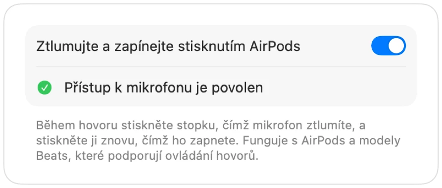

Nefunguje ztlumení přes AirPods na Macu? Zde je řešení
macOS umožňuje ztlumit hovor stisknutím stopky AirPods, ale pouze v aplikacích, které tuto funkci podporují. Mnoho aplikací ji nepodporuje, včetně prohlížeče Chrome a webových hovorů v něm. Stisknete stopku, ozve se chybový zvuk, systém ohlásí chybu ovládání mikrofonu a účastníci hovoru vás dál slyší.
Muffle tuto podporu doplňuje do každé aplikace. Zachytí stisknutí, ztlumí mikrofon Macu a přehraje běžný zvukový signál ztlumení.
Jak nastavit, aby stisknutí AirPods ztlumilo jakoukoli aplikaci
- 1
Nainstalujte Muffle a povolte přístup k mikrofonu. macOS posílá stisknutí pouze aplikacím, které mohou mikrofon používat.
- 2
V okně Nastavení Muffle zkontrolujte, zda je zapnutá volba „Ztlumujte a zapínejte stisknutím AirPods“.
- 3
Připojte se k hovoru. Stisknutí ztlumí zvuk pouze tehdy, když některá aplikace mikrofon zrovna používá.
- 4
Jedním stisknutím stopky mikrofon ztlumíte a dalším stisknutím jej zapnete.

- Mimo hovory stisknutí stále spouští a pozastavuje hudbu jako obvykle.
- Pokud vaše AirPods používají jiné gesto pro ovládání hovorů, zkontrolujte nastavení AirPods v Nastavení systému.
Časté dotazy
Proč Mac při stisknutí AirPods přehraje chybový zvuk?
Aplikace, ze které voláte, nepodporuje stisknutí AirPods pro ztlumení, takže macOS požadavek odmítne. Když běží Muffle, stisknutí místo toho ztlumí váš mikrofon.
Které modely AirPods podporují stisknutí pro ztlumení?
AirPods Pro, AirPods 3 a novější a AirPods Max, a také modely Beats s podporou ovládání hovorů.